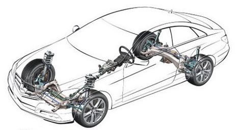
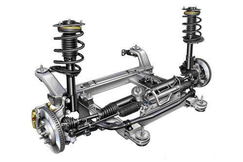

The function, shape, installation method and development trend of suspension spring
2020-06-24 10:34:08
- TAG :
The function, shape, installation method and development trend of suspension spring
1：The function of suspension springs
Suspension spring is an important part of automobile chassis system, which is mainly used in passenger cars. Its function is as follows：
1) Carry the vehicle power system, body system and occupant quality together with the shock absorber
2) Absorb the vehicle's driving vibration and improve riding comfort.
3) Use spring tension to act on the tire to keep the tire gripping ability, to ensure that the direction of the vehicle is not out of control due to the tire not landing.

2: The shape and installation method of suspension spring
Suspension springs have various shapes, and they fall into the category of spiral compression springs in general. Suspension springs are generally used in conjunction with automobile shock absorbers to form the vehicle's shock absorption system.
Most passenger car car suspension systems use independent or semi-independent suspension. The front suspension is mainly independent suspension, the most commonly used form is McPherson (or double wishbone) independent suspension, spring and shock absorber are assembled together. In consideration of market positioning, cost and space, the rear suspension will choose a multi-link independent suspension or a torsion beam type, trailing arm type (longitudinal H-shaped) semi-independent suspension, and the spring and the shock absorber are installed separately.

3: Development trend of suspension springs
1) Optimized design
The front suspension spring is designed with an S-shaped spring with lateral force. The S-shaped design idea is to provide a reaction force opposite to the lateral force direction to the shock absorber, so as to extend the life of the shock absorber. The front suspension spring adopts the S-shaped design to become the mainstream, and the rear suspension spring is mostly designed with a cylindrical spring or Miniblock spring.
2）High stress lightweight trend
3）The requirements for spring shot peening strengthened, and high stress will inevitably increase the requirements for material surface strengthening. Multiple shot peening, thermal shot peening and stress shot peening are becoming more and more common in production.
4) Improve impact resistance and corrosion resistance
Corrosion fatigue has become an important mode of fatigue failure of high-stress springs. In order to cope with corrosion fatigue failure, there are two research directions in the study of materials and processes. The first direction is that some steel companies are focusing on the development of new materials with a maximum allowable stress of springs exceeding 1200MPa and good corrosion fatigue resistance; another This direction focuses on the development of surface coating technology with better impact resistance and corrosion resistance. For example, a spring with a hardness value exceeding a certain value must use a composite coating process.